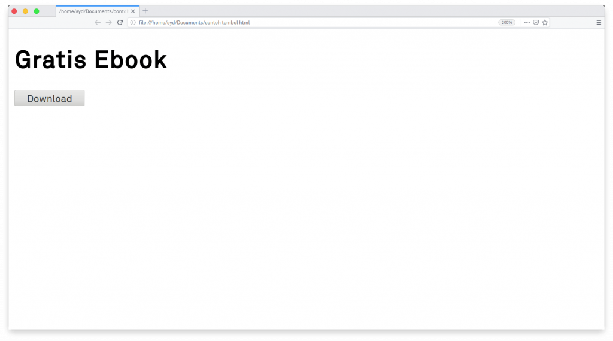
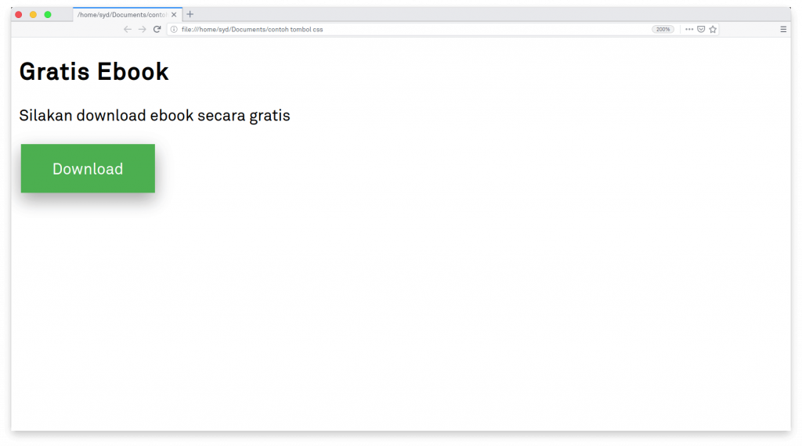

Pengertian CSS dan Cara Kerjanya
Pengembangan website menggunakan HTML atau PHP saja belum cukup. Anda membutuhkan CSS yang bisa mengatur seluruh tampilan website sehingga terlihat lebih menarik dan sesuai dengan kebutuhan user. Itulah kenapa Anda perlu tahu pengertian CSS.
Anda wajib mengetahui mengenai CSS karena akan sangat berguna dalam proses pengembangan website. Apalagi saat ini hampir setiap website menggunakan CSS sebagai tools untuk mengatur berbagai tampilan di dalamnya. Nah! Pada artikel kali ini kami akan membahas selengkap mungkin belajar CSS mulai dari pengertian css dan fungsinya.
Pengertian CSS
CSS adalah kepanjangaan dari Cascading Style Sheets yang berguna untuk menyederhanakan proses pembuatan website dengan mengatur elemen yang tertulis di bahasa markup.
CSS dipakai untuk mendesain halaman depan atau tampilan website (front end). CSS menangani tampilan dan ‘rasa’ dari halaman website.
Ada banyak hal yang dapat Anda lakukan menggunakan CSS dibandingkan dengan bahasa pemrograman inti seperti HTML dan PHP. Ketika menggunakan CSS, Anda dapat mengatur warna teks, jenis font, baris antar paragraf, ukuran kolom, dan jenis background yang dipakai.
Tidak hanya itu CSS juga bisa untuk mendesain layout, variasi tampilan di berbagai perangkat yang berbeda, dan berbagai efek yang dipakai di dalam website.
CSS sangat mudah dipelajari, tapi juga powerful karena dapat mengontrol penyajian tampilan dari dokumen HTML. Mulai dari yang simpel sampai kompleks. Tidak heran jika saat ini CSS hampir dipakai di berbagai website untuk dikombinasikan dengan HTML maupun PHP.
Fungsi CSS
Anda pernah mencoba mengembangkan website menggunakan HTML atau PHP? Jika sudah, Anda pasti merasakan sedikit kesulitan untuk mendesain tampilannya. Apalagi jika membuat tampilan yang cukup kompleks di proyek yang besar.
HTML memang bukan dikembangkan untuk mendesain tampilan depan website.
Lalu, bagaimana membuat tampilan website yang menarik dengan mudah? Menggunakan CSS bisa menjadi salah satu solusinya.
Sebagai contoh, jika membuat tombol menggunakan HTML saja, Anda mungkin akan mendapatkan hasil seperti ini:
Namun, jika menambahkan CSS, hasilnya akan menjadi lebih cantik seperti ini:
CSS tentu tidak hanya mengatur tombol saja. Anda bisa mendesain berbagai macam tampilan menggunakan CSS sehingga sesuai dengan kebutuhan.
Selain itu, ada beberapa keuntungan yang bisa Anda dapatkan ketika menggunakan CSS, seperti:
1. Mempercepat Proses Desain
Apa yang akan Anda lakukan jika menggunakan desain yang sama di beberapa halaman HTML? Anda mungkin akan menyalin satu per satu ke setiap file halaman.
Sesuai dengan pengertian CSS, jika menggunakan CSS, Anda tidak perlu melakukan itu lagi.CSSApa yang akan Anda lakukan jika menggunakan desain yang sama di beberapa halaman HTML? Anda mungkin akan menyalin satu per satu ke setiap file halaman. Jika menggunakan CSS, Anda tidak perlu melakukan itu lagi.
Ketika menggunakan CSS, Anda cukup mengetikkan satu kali fungsi CSS kemudian menggunakannya di berbagai halaman HTML. Fungsi CSS yang Anda buat dalam satu file dapat Anda panggil ke berbagai halaman web tanpa harus menyalin baris kode fungsi berkali-kali.
2. Halaman Lebih Cepat Dimuat
Jika menggunakan CSS, Anda tidak perlu menuliskan atribut tag HTML di setiap file. Anda hanya cukup menulis satu aturan CSS dan menerapkannya di berbagai file yang membutuhkannya hanya dengan memanggilnya.
Jadi satu file hanya mengandung sedikit baris kode yang dimuat. Nah, sedikit baris kode inilah yang akan membuat proses download menjadi lebih cepat.
3. Proses Pemeliharaan Mudah
CSS memudahkan Anda untuk mengubah tampilan di berbagai halaman. Hanya dengan mengubah fungsi style di file CSS maka seluruh tampilan yang menggunakan fungsi tersebut akan berubah secara otomatis.
4. Style Lebih Beragam Dibanding HTML
CSS mempunyai atribut lebih beragam dibandingkan dengan HTML. Apa keuntungannya? Anda mempunyai lebih banyak pilihan tampilan halaman website.
5. Kompatibel Dengan Berbagai Macam Perangkat
CSS memungkinkan konten Anda dapat dioptimasi di lebih dari satu perangkat. Misal ketika memproses sebuah dokumen. Jika menggunakan CSS, Anda bisa menyesuaikan tampilan dokumen di perangkat versi lama sekaligus di versi yang baru.
6. CSS Menjadi Standar Pengembangan Website
Hampir seluruh website yang ada di internet menggunakan CSS di dalamnya. Selain tampilannya yang lebih menarik, kebanyakan browser populer saat ini juga mendukung CSS. Jadi jika Anda ingin mengembangkan website yang sesuai standar browser populer, sebaiknya gunakan CSS. Anda pasti juga ingin website dapat kompatibel dengan berbagai macam browser kan?.
Cara Kerja CSS
Setelah mengetahui pengertian CSS dan fungsinys, pertanyaan selanjutnya ialah bagaimana cara kerja CSS? Jawabannya, CSS membuat style di dalam halaman web dapat berinteraksi dengan elemen HTML. Elemen merupakan komponen HTML dari sebuah halaman web. Berikut adalah salah satu contoh elemen di HTML:
| <p>This is my paragraph!</p> |
Jika Anda ingin membuat paragraf di atas muncul dengan warna yang lain dan bold, Anda bisa menambahkan baris CSS seperti di bawah ini:
| p { color:pink; font-weight:bold; } |
Pada contoh di atas, “p” (paragraf) merupakan bagian baris kode CSS untuk menspesifikasikan elemen HTML atau biasa dikenal dengan nama ‘selector’.
Di dalam CSS, selector ditulis di bagian kiri sebelum tanda kurung kurawal (curly bracket) pertama. Sedangkan informasi yang ada di dalam tanda kurung kurawal merupakan sebuah deklarasi yang di dalamnya mengandung properti dan nilai yang diaplikasikan ke dalam selector.
Contoh dari properti adalah ukuran font, warna, layout, format, dan lain sebagainya. Sedangkan nilai yang dimaksud adalah pengaturan yang diterapkan ke dalam properti. Misalnya dari contoh di atas, “color” dan “font-weight” merupakan properti, sedangkan “pink” dan “bold” merupakan sebuah nilai.
Jadi seluruh baris kode di dalam tanda kurung kurawal { color:pink; font-weight:bold; } merupakan sebuah deklarasi, sedangkan “p” (HTML paragraf) merupakan sebuah selector. Baik deklarasi dan selector merupakan prinsip dasar dari penggunaan CSS dan HTML. Prinsip ini juga dapat digunakan untuk mengatur ukuran font, warna background, format teks, dan lain sebagainya.
Sebagai tambahan, baris kode ..
| body { background-color:lightblue; } |
.. akan membuat halaman background menjadi biru cerah, atau ..
| p { font-size:20px; color:red; } |
.. akan menerapkan ukuran font 20 dengan warna merah.
3 Macam CSS di Dalam Kode HTML
Saat belajar CSS kamu perlu mengetahui tiga macam penempatan CSS yang dapat dipakai ke dalam baris kode HTML, yaitu external, internal, atau inline. Bagian ini akan membahas tiga macam CSS ini dengan lebih detail.
Inline CSS
Inline CSS adalah penempatan CSS yang langsung dilakukan di dalam konten HTML. Penempatan CSS secara inline hanya akan mempengaruhi satu bagian baris kode. Berikut adalah contohnya.
| <h1 style="font-size:30px;color:blue;">Cek beritama utama ini!</h1> |
CSS di atas berarti hanya akan mempengaruhi paragraf yang spesifik di dalam satu file .html dan muncul dengan warna biru (blue) ukuran font 30px.
External CSS
External CSS adalah penempatan baris kode CSS menggunakan file .css. Cata ini dapat digunakan untuk mendeklarasikan sebagian besar pengaturan tampilan website secara keseluruhan.
Cara ini lebih sederhana dan simpel daripada menambahkan baris kode di setiap elemen HTML yang ingin Anda atur tampilannya.
Jika menggunakan penempatan secara eksternal, Anda harus menambahkan header untuk memanggil file .css di dalam file HTML seperti contoh di bawah ini.
| <head> <link rel="stylesheet" type="text/css" href=fileCSSAnda.css"> </head> |
Baris kode di atas akan menghubungkan file .html dengan eksternal style sheet (CSS). Pada contoh di atas file CSS menggunakan nama ‘fileCSSAnda.css’ yang dapat Anda sesuaikan dengan letak file CSS di dalam direktori website. Ketika file HTML sudah terhubung dengan file CSS maka seluruh pengaturan CSS akan diterapkan di dalam kode HTML.
Internal CSS
Lalu, bagaimana penempatan CSS menggunakan cara internal? Internal CSS sekilas mirip dengan inline CSS, yaitu tipe penulisan tanpa file CSS terpisah.
Namun di dalam penggunaan CSS secara internal, baris kode HTML dituliskan di bagian atas (header) file HTML. Cara ini akan sangat cocok dipakai untuk menciptakan halaman web dengan tampilan yang berbeda. Dengan kata lain, CSS ini bisa dipakai untuk menciptakan tampilan yang unik.
Baris kode CSS secara internal contohnya seperti di bawah ini.
| <head> <style> Body { background-color:blue; } P { font-size:20px; color:mediumblue; } </style> </head> |
Baris kode di atas akan menerapkan background dengan warna biru, paragraf berukuran 20px, dan ‘medium blue’ font ke dalam satu halaman HTML.
Di antara tiga jenis penempatan CSS, cara eksternal merupakan cara yang paling efektif untuk mengimplementasikan CSS ke dalam website. Cara ini juga paling populer atau sering dipakai oleh banyak pengembangan website dibandingkan dengan cara yang lainnya. Sedangkan cara internal dan inline juga bisa dipakai untuk menambahkan format konten yang khusus atau berbeda dengan konten yang lainnya.
Penutup
CSS mudah dipelajari, tapi bisa memberikan efek yang sangat besar bagi pengembangan website. CSS memudahkan Anda untuk mengatur berbagai tampilan yang di dalam website dengan tidak mengesampingkan user experience. Anda bisa mengatur warna, ukuran font, jenis layout, dan berbagai macam pengaturan tampilan sehingga bisa sesuai dengan kebutuhan yang diinginkan.
Jadi, ketika HTML merupakan pondasi, kerangka, tembok, atau bahan baku semen untuk mendukung pembuatan website, CSS merupakan cat, desain jendela, dan berbagai macam pengaturan setelahnya. CSS adalah solusi dari pengambangan tampilan bangunan website Anda.
Contoh penerapan langsung dari CSS adalah seperti membuat desain form login, membuat desain dropdown yang menarik, dan masih banyak lagi.
Sampai di sini semoga Anda paham mengenai pengertian CSS dan fungsinya. Jika ada pertanyaan atau tambahan lain silakan tinggalkan komentar melalui kolom di bawah ini. Jangan lupa subscribe dan follow sosial media kami untuk mendapatkan informasi seputar bisnis, hosting, digital marketing, dan teknologi.